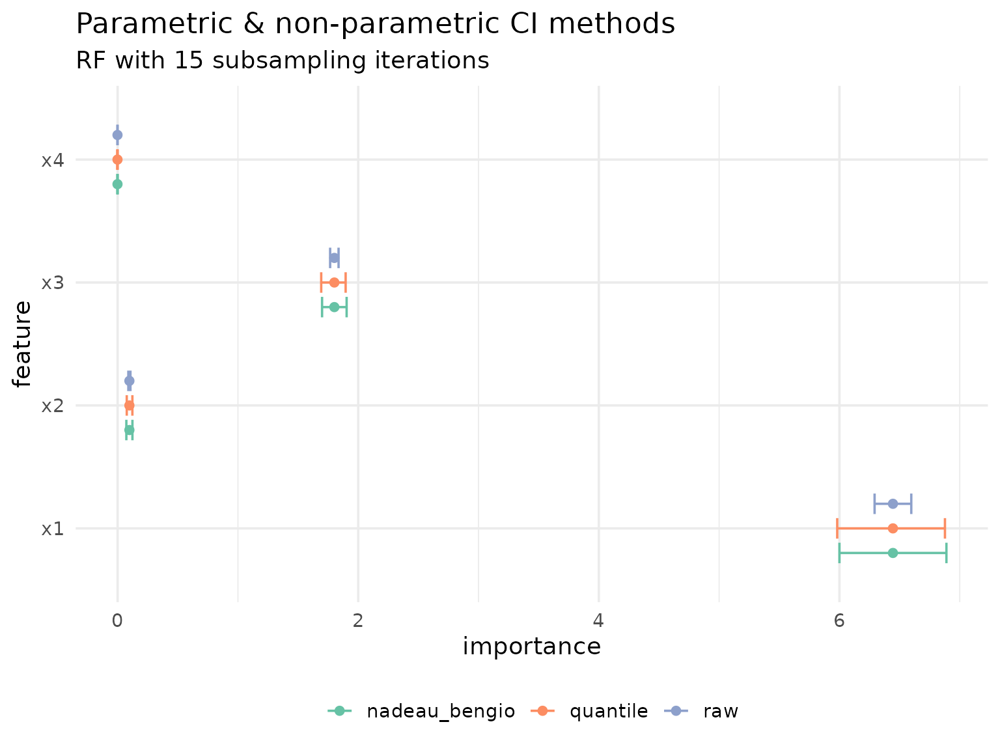
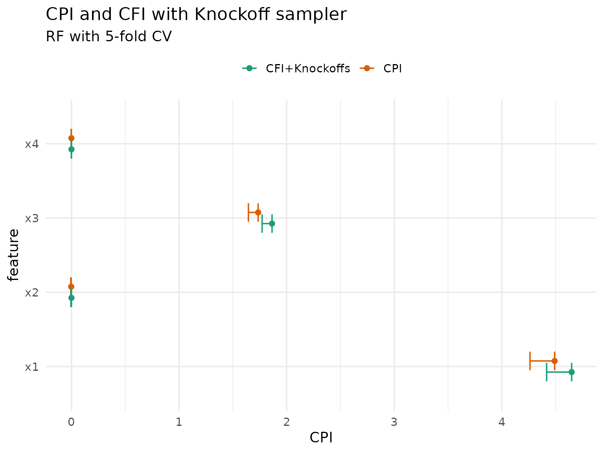
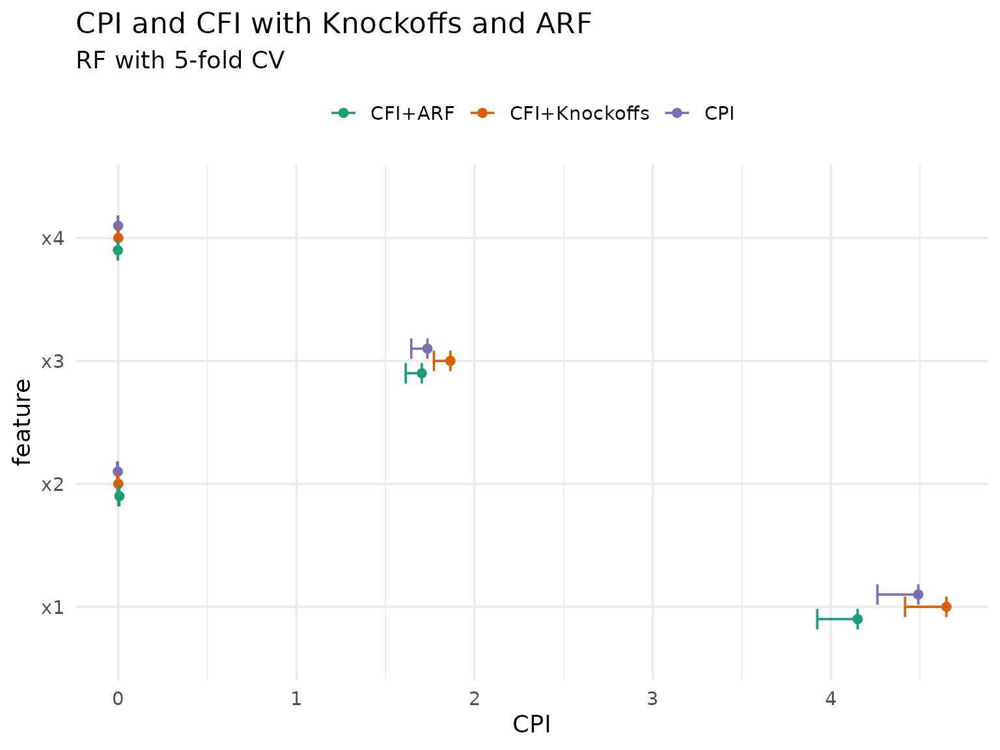

library(xplainfi)
library(mlr3learners)
#> Loading required package: mlr3
# Data manip and visualization
library(data.table)
library(ggplot2)There are multiple (work in progress) inference possible with the underlying implementation, but the API around them is still being worked out.
Setup
We use a simple linear DGP for demonstration purposes where
- \(X_1\) and \(X_2\) are strongly correlated
- \(X_1\) and \(X_3\) has an effect on Y
- \(X_2\) and \(X_4\) don’t have an effect
task = sim_dgp_correlated(n = 2000, r = 0.7)
learner = lrn("regr.ranger", num.trees = 500)
measure = msr("regr.mse")DAG for correlated features DGP
Variance-correction
When we calculate PFI using an appropriate resampling, such as subsampling with 15 repeats, we can use the approach recommended by Molnar et al. (2023) based on the proposed correction by Nadeay & Bengio (2003).
By default, any importance measures’ $importance()
method will not output any variances or confidence intervals, it will
merely compute averages over resampling iterations and repeats within
resamplings (iter_perm here).
pfi = PFI$new(
task = task,
learner = learner,
resampling = rsmp("subsampling", repeats = 15),
measure = measure,
iters_perm = 10 # for stability within resampling iters
)
pfi$compute()
pfi$importance()
#> Key: <feature>
#> feature importance
#> <char> <num>
#> 1: x1 6.444709393
#> 2: x2 0.097777103
#> 3: x3 1.801488945
#> 4: x4 -0.001099328If we want unadjusted confidence intervals we can ask for them, but note these are too narrow / optimistic and hence invalid for inference:
pfi_ci_raw = pfi$importance(variance_method = "raw")
pfi_ci_raw
#> Key: <feature>
#> feature importance se conf_lower conf_upper
#> <char> <num> <num> <num> <num>
#> 1: x1 6.444709393 0.0710846455 6.292247992 6.597170794
#> 2: x2 0.097777103 0.0040374343 0.089117668 0.106436538
#> 3: x3 1.801488945 0.0163236399 1.766478220 1.836499671
#> 4: x4 -0.001099328 0.0003169572 -0.001779133 -0.000419522Analogously we can retrieve the Nadeau & Bengio-adjusted standard errors and derived confidence intervals which were demonstrated to have better (but still imperfect) coverage:
pfi_ci_corrected = pfi$importance(variance_method = "nadeau_bengio")
pfi_ci_corrected
#> Key: <feature>
#> feature importance se conf_lower conf_upper
#> <char> <num> <num> <num> <num>
#> 1: x1 6.444709393 0.2073141539 6.00006476 6.8893540305
#> 2: x2 0.097777103 0.0117749378 0.07252237 0.1230318328
#> 3: x3 1.801488945 0.0476069279 1.69938224 1.9035956504
#> 4: x4 -0.001099328 0.0009243869 -0.00308194 0.0008832851To highlight just how large the difference between the two can be, we quickly visualize them:
pfi_cis = rbind(
pfi_ci_raw[, type := "raw"],
pfi_ci_corrected[, type := "corrected"]
)
ggplot(pfi_cis, aes(y = feature, color = type)) +
geom_errorbar(aes(xmin = conf_lower, xmax = conf_upper), position = "dodge", width = .5) +
geom_point(aes(x = importance), position = position_dodge(width = 0.5)) +
theme_minimal(base_size = 14) +
theme(legend.position = "bottom")
Conditional predictive impact (CPI)
CPI is implemented by the cpi
package, and provides conditional variable importance using
knockoffs. It works with mlr3 and its output on our data
looks like this:
cpi_res = cpi(
task = task,
learner = learner,
resampling = resampling,
measure = measure,
test = "t"
)
setDT(cpi_res)
setnames(cpi_res, "Variable", "feature")
cpi_res[, method := "CPI"]
cpi_res
#> feature CPI SE test statistic estimate
#> <char> <num> <num> <char> <num> <num>
#> 1: x1 4.4905247594 0.1393416714 t 32.226718 4.4905247594
#> 2: x2 -0.0026748965 0.0023132871 t -1.156318 -0.0026748965
#> 3: x3 1.7350915247 0.0551007024 t 31.489463 1.7350915247
#> 4: x4 -0.0009994758 0.0009142715 t -1.093194 -0.0009994758
#> p.value ci.lo method
#> <num> <num> <char>
#> 1: 3.644769e-184 4.261221841 CPI
#> 2: 8.761554e-01 -0.006481679 CPI
#> 3: 2.156035e-177 1.644416914 CPI
#> 4: 8.627797e-01 -0.002504016 CPICPI with knockoffs
Since xplainfi also includes knockoffs via the
KnockoffSampler and the
KnockoffGaussianSampler, the latter implemented the second
order Gaussian knockoffs also used per default in cpi, we
can recreate its results using CFI with the corresponding
sampler. The important result however is not the
$importance(), but the observation-wise losses which are
the base for the CPI test.
knockoff_gaussian = KnockoffGaussianSampler$new(task)
cfi = CFI$new(
task = task,
learner = learner,
resampling = resampling,
measure = measure,
sampler = knockoff_gaussian
)
cfi$compute()
# showing importance here for illustration
cfi$importance()
#> Key: <feature>
#> feature importance
#> <char> <num>
#> 1: x1 4.6485211373
#> 2: x2 -0.0002372201
#> 3: x3 1.8639780917
#> 4: x4 -0.0002621368
# Extract observation-wise losses
cfi_obs_loss = cfi$obs_loss()
head(cfi_obs_loss)
#> feature iter_rsmp iter_perm row_ids loss_baseline loss_post obs_importance
#> <char> <int> <int> <int> <num> <num> <num>
#> 1: x1 1 1 6 0.033999520 4.9474560 4.9134565
#> 2: x1 1 1 9 0.083286015 9.9966152 9.9133292
#> 3: x1 1 1 12 0.194163837 0.6922831 0.4981192
#> 4: x1 1 1 16 0.015719984 0.5146092 0.4988892
#> 5: x1 1 1 18 0.032886056 7.4098215 7.3769355
#> 6: x1 1 1 25 0.006547662 8.6526833 8.6461356With the observation-wise losses, we can conduct the one-sided t-test
also performed by cpi() by default:
cfi_cpi_res = cfi_obs_loss[,
{
tt <- t.test(
obs_importance,
alternative = "greater",
conf.level = 0.95
)
.(
CPI = mean(obs_importance),
SE = sd(obs_importance) / sqrt(length(obs_importance)),
statistic = tt$statistic,
estimate = tt$estimate,
p.value = tt$p.value,
ci.lo = tt$conf.int[1],
method = "CFI+Knockoffs"
)
},
by = feature
]
cfi_cpi_res
#> feature CPI SE statistic estimate p.value
#> <char> <num> <num> <num> <num> <num>
#> 1: x1 4.6485211373 0.1412096720 32.91928289 4.6485211373 1.430822e-190
#> 2: x2 -0.0002372201 0.0029839960 -0.07949746 -0.0002372201 5.316775e-01
#> 3: x3 1.8639780917 0.0561726066 33.18304428 1.8639780917 5.072022e-193
#> 4: x4 -0.0002621368 0.0007881572 -0.33259452 -0.0002621368 6.302624e-01
#> ci.lo method
#> <num> <char>
#> 1: 4.416144207 CFI+Knockoffs
#> 2: -0.005147732 CFI+Knockoffs
#> 3: 1.771539538 CFI+Knockoffs
#> 4: -0.001559141 CFI+KnockoffsThe results should be very similar to those computed by
cpi(), so let’s compare them:
rbindlist(list(cpi_res, cfi_cpi_res), fill = TRUE) |>
ggplot(aes(y = feature, x = CPI, color = method)) +
geom_point(position = position_dodge(width = 0.3)) +
geom_errorbar(
aes(xmin = CPI, xmax = ci.lo),
position = position_dodge(width = 0.3),
width = 0.5
) +
scale_color_brewer(palette = "Dark2") +
labs(
title = "CPI and CFI with Knockoff sampler",
subtitle = "RF with 5-fold CV",
color = NULL
) +
theme_minimal(base_size = 14) +
theme(legend.position = "top")
A noteable caveat of the knockoff approach is that they are not readily available for mixed data (with categorical features).
CPI with ARF
An alternative is available using ARF as conditional sampler rather than knockoffs (CITE cARFi), which we can perform analogously:
arf_sampler = ARFSampler$new(
task = task,
finite_bounds = "local",
min_node_size = 20,
epsilon = 1e-15
)
cfi_arf = CFI$new(
task = task,
learner = learner,
resampling = resampling,
measure = measure,
sampler = arf_sampler
)
cfi_arf$compute()
# showing importance here for illustration
cfi_arf$importance()
#> Key: <feature>
#> feature importance
#> <char> <num>
#> 1: x1 3.916755677
#> 2: x2 0.001979266
#> 3: x3 1.757978495
#> 4: x4 -0.001232825
# Extract observation-wise losses
cfi_arf_obs_loss = cfi_arf$obs_loss()
head(cfi_arf_obs_loss)
#> feature iter_rsmp iter_perm row_ids loss_baseline loss_post obs_importance
#> <char> <int> <int> <int> <num> <num> <num>
#> 1: x1 1 1 6 0.042701587 21.4183325 21.3756309
#> 2: x1 1 1 9 0.095974835 0.7633119 0.6673370
#> 3: x1 1 1 12 0.244698470 2.9890856 2.7443871
#> 4: x1 1 1 16 0.016257283 10.9607339 10.9444766
#> 5: x1 1 1 18 0.035470161 5.7731139 5.7376437
#> 6: x1 1 1 25 0.009120495 0.3782982 0.3691777With the observation-wise losses, we can conduct the one-sided t-test
also performed by cpi() by default:
cfi_arf_res = cfi_arf_obs_loss[,
{
tt <- t.test(
obs_importance,
alternative = "greater",
conf.level = 0.95
)
.(
CPI = mean(obs_importance),
SE = sd(obs_importance) / sqrt(length(obs_importance)),
statistic = tt$statistic,
estimate = tt$estimate,
p.value = tt$p.value,
ci.lo = tt$conf.int[1],
method = "CFI+ARF"
)
},
by = feature
]
cfi_arf_res
#> feature CPI SE statistic estimate p.value
#> <char> <num> <num> <num> <num> <num>
#> 1: x1 3.916755677 0.132819130 29.4893941 3.916755677 2.670941e-159
#> 2: x2 0.001979266 0.002531915 0.7817271 0.001979266 2.172338e-01
#> 3: x3 1.757978495 0.056717538 30.9953246 1.757978495 6.968806e-173
#> 4: x4 -0.001232825 0.000758003 -1.6264117 -0.001232825 9.479901e-01
#> ci.lo method
#> <num> <char>
#> 1: 3.698186358 CFI+ARF
#> 2: -0.002187294 CFI+ARF
#> 3: 1.664643193 CFI+ARF
#> 4: -0.002480207 CFI+ARFWe can now compare all three methods:
rbindlist(list(cpi_res, cfi_cpi_res, cfi_arf_res), fill = TRUE) |>
ggplot(aes(y = feature, x = CPI, color = method)) +
geom_point(position = position_dodge(width = 0.3)) +
geom_errorbar(
aes(xmin = CPI, xmax = ci.lo),
position = position_dodge(width = 0.3),
width = 0.5
) +
scale_color_brewer(palette = "Dark2") +
labs(
title = "CPI and CFI with Knockoffs and ARF",
subtitle = "RF with 5-fold CV",
color = NULL
) +
theme_minimal(base_size = 14) +
theme(legend.position = "top")
As expected, the ARF-based approach differs more from both knockoff-based approaches, but they are all roughly in agreement.
Note: xplainfi will gain a dedicated
interface to perform CPI, but the API is yet to be worked out.
LOCO (WIP)
(CITATION) proposed inference for LOCO using the median absolute differences of the baseline- and post-refit loss differences
\[ \theta_j = \mathrm{med}\left( |Y - \hat{f}_{n_1}^{-j}(X)| - |Y - \hat{f}_{n_1}(X)| \big| D_1 \right) \]
If we apply LOCO as implemented in xplainfi
using the median absolute error (MAE) as our measure including the
median as the aggregation function, we unfortunately get something else,
though:
measure_mae = msr("regr.mae")
measure_mae$aggregator = median
loco = LOCO$new(
task = task,
learner = learner,
resampling = rsmp("cv", folds = 10),
measure = measure_mae
)
loco$compute()
loco$importance()
#> Key: <feature>
#> feature importance
#> <char> <num>
#> 1: x1 0.97525707
#> 2: x2 0.03986156
#> 3: x3 0.63630022
#> 4: x4 0.04484123This is not exactly what the authors propose,
because $score() calculates the aggregation function
(median) for each resampling iteration first, and takes the
difference afterwards, i.e.
\[ \theta_j = \mathrm{med}\left(|Y - \hat{f}_{n_1}^{-j}(X)|\right) - \mathrm{med}\left(|Y - \hat{f}_{n_1}(X)| \big| D_1 \right) \]
In the default case where the arithemtic mean is used, it does not matter whether we calculate the difference of the means or the mean of the differences, but using the median it does.
We can, however, reconstruct it by using the observation-wise losses (in this case, the absolute error):
loco_obsloss = loco$obs_loss()
head(loco_obsloss)
#> feature iter_rsmp iter_refit row_ids loss_baseline loss_post obs_importance
#> <char> <int> <num> <int> <num> <num> <num>
#> 1: x1 1 1 42 0.05864333 0.5071679 0.4485246
#> 2: x1 1 1 46 0.23216703 0.4272341 0.1950671
#> 3: x1 1 1 105 0.24396323 2.3282881 2.0843249
#> 4: x1 1 1 111 0.34811975 0.9381356 0.5900159
#> 5: x1 1 1 115 0.05274243 2.6444159 2.5916735
#> 6: x1 1 1 125 0.54248766 1.7175352 1.1750476obs_importance here refers to the difference
loss_post - loss_baseline, so
-
loss_baseline$ = |Y - _{n_1}(X)|$ -
loss_post$ = |Y - _{n_1}^{-j}(X)|$ obs_importance = loss_post - loss_baseline
Which means by taking the median for each feature \(j\) within each resampling iteration, we can construct \(\theta_j(D_1)\) as proposed, for each set \(D_k\) where \(k\) is the resampling iteration:
loco_thetas = loco_obsloss[, list(theta = median(obs_importance)), by = c("feature", "iter_rsmp")]
loco_thetas
#> feature iter_rsmp theta
#> <char> <int> <num>
#> 1: x1 1 0.85466423
#> 2: x1 2 0.73690083
#> 3: x1 3 0.94372755
#> 4: x1 4 0.77573661
#> 5: x1 5 0.81892731
#> 6: x1 6 0.73694737
#> 7: x1 7 0.94887102
#> 8: x1 8 0.89685041
#> 9: x1 9 0.84535227
#> 10: x1 10 0.77662104
#> 11: x2 1 0.03134738
#> 12: x2 2 0.00861283
#> 13: x2 3 0.03274140
#> 14: x2 4 0.01858428
#> 15: x2 5 0.01583010
#> 16: x2 6 0.01212995
#> 17: x2 7 0.02287022
#> 18: x2 8 0.04921564
#> 19: x2 9 0.02549185
#> 20: x2 10 0.02198419
#> 21: x3 1 0.57562797
#> 22: x3 2 0.55186044
#> 23: x3 3 0.43997816
#> 24: x3 4 0.51727252
#> 25: x3 5 0.45247422
#> 26: x3 6 0.55005612
#> 27: x3 7 0.58135317
#> 28: x3 8 0.57428653
#> 29: x3 9 0.57553603
#> 30: x3 10 0.56575902
#> 31: x4 1 0.02027085
#> 32: x4 2 0.02503951
#> 33: x4 3 0.02154713
#> 34: x4 4 0.01902680
#> 35: x4 5 0.01762906
#> 36: x4 6 0.01416039
#> 37: x4 7 0.02854561
#> 38: x4 8 0.04073741
#> 39: x4 9 0.02999120
#> 40: x4 10 0.01050114
#> feature iter_rsmp thetaThe authors then propose to construct distribution-free confidence intervals, e.g. using a sign- or Wilcoxon test We can for example use [wilcoxon.test] to compute confidence intervals around the estimated pseudo-median:
loco_wilcox_ci = loco_obsloss[,
{
tt <- wilcox.test(
obs_importance,
conf.int = TRUE,
conf.level = 0.95
)
.(
# SE = sd(obs_importance) / sqrt(length(obs_importance)),
statistic = tt$statistic,
estimate = tt$estimate,
p.value = tt$p.value,
conf_lower = tt$conf.int[1],
conf_upper = tt$conf.int[2]
)
},
by = feature
]
loco_wilcox_ci
#> feature statistic estimate p.value conf_lower conf_upper
#> <char> <num> <num> <num> <num> <num>
#> 1: x1 1946600 0.92071769 1.005087e-293 0.88095522 0.96136374
#> 2: x2 1244504 0.02682832 3.497731e-21 0.02125478 0.03242075
#> 3: x3 1904433 0.59886721 2.585291e-268 0.57044921 0.62728264
#> 4: x4 1362327 0.02991671 1.388275e-44 0.02566247 0.03431650Note: The above approach needs checking with the literature to ensure it’s actually corresponding to what was proposed and the results are valid.
The main point of this section is to illustrate that the availability of the intermediate parts (i.e. obs losses) and flexibility regarding the used measure allows for flexibility in terms of inference.